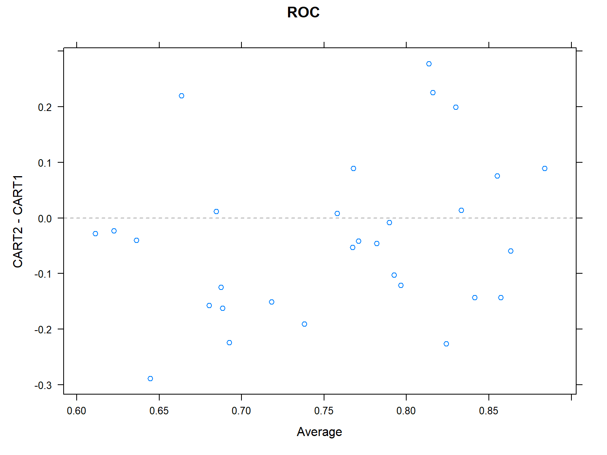

options(width=100)
if(!require("knitr")) install.packages("knitr")
library("knitr")
#getOption("width")
knitr::opts_chunk$set(comment=NA,echo = TRUE, cache=TRUE)The caret package
Introduction to caret
if(!require("caret")) install.packages("caret")
if(!require("mlbench")) install.packages("mlbench")
library("caret")The caret package, short for classification and regression training, was built with several goals in mind:
- Create a unified interface for modelling and prediction (interfaces to more than 200 models),
- Develop a set of semi-automated, reasonable approaches for optimizing the values of the tuning parameters for many of these models and
- Increase computational efficiency using parallel processing.
That is caret has been developed to facilitate building, evaluating and comparing predictive models and as such it is an interesting alternative to using multiple different packages for distinct tasks, which, not only requires more time to learn how to use each of them, but especially makes it much harder to compare them.
Learning to use caret
There are multiple resources to learn caretthat go from simple tutorials like this one or similars to courses, papers and a book by Max Kuhn, the creator or the package.
Guiding example
The
caretpackage can be used to perform a study from beginning to end.For this, it implements a set of general functions that can roughly be associated with the distinct steps of an analytical pipeline.
We follow an example based on the
sonar datafrom themlbenchpackage to illustrate the multiple functionalities of the package .
The goal is to predict two classes:
- M for metal cylinder
- R for rock
Data loading
library("mlbench")
data(Sonar)
names(Sonar) [1] "V1" "V2" "V3" "V4" "V5" "V6" "V7" "V8" "V9" "V10" "V11" "V12"
[13] "V13" "V14" "V15" "V16" "V17" "V18" "V19" "V20" "V21" "V22" "V23" "V24"
[25] "V25" "V26" "V27" "V28" "V29" "V30" "V31" "V32" "V33" "V34" "V35" "V36"
[37] "V37" "V38" "V39" "V40" "V41" "V42" "V43" "V44" "V45" "V46" "V47" "V48"
[49] "V49" "V50" "V51" "V52" "V53" "V54" "V55" "V56" "V57" "V58" "V59" "V60"
[61] "Class"The sonarpackage has 208 data points collected on 60 predictors (energy within a particular frequency band).
Train/test splitting
We will most of the time want to split the data into two groups: a training set and a test set.
This may be done with the createDataPartition function:
set.seed(1234) # Control of data generation
inTrain <- createDataPartition(y=Sonar$Class, p=.75, list=FALSE)
str(inTrain) int [1:157, 1] 2 3 4 6 7 8 9 11 14 15 ...
- attr(*, "dimnames")=List of 2
..$ : NULL
..$ : chr "Resample1"training <- Sonar[inTrain,]
testing <- Sonar[-inTrain,]
nrow(training)[1] 157Others similar functions are: createFolds and createResample,
Preprocessing and training
Usually, before prediction, data may have to be cleaned and pre-processed.
Caret allows to integrate it with the training step using the train function.
This function has multiple parameter such as:
- method: Can choose from more than 200 models
- preprocess: all type of filtering and transformations
CART1Model <- train (Class ~ .,
data=training,
method="rpart1SE",
preProc=c("center","scale"))
CART1ModelCART
157 samples
60 predictor
2 classes: 'M', 'R'
Pre-processing: centered (60), scaled (60)
Resampling: Bootstrapped (25 reps)
Summary of sample sizes: 157, 157, 157, 157, 157, 157, ...
Resampling results:
Accuracy Kappa
0.6752493 0.350363Refining specifications
Many specifications can be passed using the trainControl instruction.
ctrl <- trainControl(method = "repeatedcv", repeats=3)
CART1Model3x10cv <- train (Class ~ .,
data=training,
method="rpart1SE",
trControl=ctrl,
preProc=c("center","scale"))
CART1Model3x10cvCART
157 samples
60 predictor
2 classes: 'M', 'R'
Pre-processing: centered (60), scaled (60)
Resampling: Cross-Validated (10 fold, repeated 3 times)
Summary of sample sizes: 141, 142, 142, 141, 141, 142, ...
Resampling results:
Accuracy Kappa
0.7087173 0.4168066We can change the method used by changing the trainControl parameter.
In the example below we fit a classification tree with different options:
ctrl <- trainControl(method = "repeatedcv", repeats=3,
classProbs=TRUE,
summaryFunction=twoClassSummary)
CART1Model3x10cv <- train (Class ~ .,
data=training,
method="rpart1SE",
trControl=ctrl,
metric="ROC",
preProc=c("center","scale"))
CART1Model3x10cvCART
157 samples
60 predictor
2 classes: 'M', 'R'
Pre-processing: centered (60), scaled (60)
Resampling: Cross-Validated (10 fold, repeated 3 times)
Summary of sample sizes: 141, 141, 142, 141, 141, 142, ...
Resampling results:
ROC Sens Spec
0.7757068 0.775 0.6869048CART2Fit3x10cv <- train (Class ~ .,
data=training,
method="rpart",
trControl=ctrl,
metric="ROC",
preProc=c("center","scale"))
CART2Fit3x10cvCART
157 samples
60 predictor
2 classes: 'M', 'R'
Pre-processing: centered (60), scaled (60)
Resampling: Cross-Validated (10 fold, repeated 3 times)
Summary of sample sizes: 142, 142, 142, 142, 142, 140, ...
Resampling results across tuning parameters:
cp ROC Sens Spec
0.06849315 0.7033441 0.6851852 0.6779762
0.10958904 0.6829282 0.7523148 0.5922619
0.47945205 0.5517196 0.8629630 0.2404762
ROC was used to select the optimal model using the largest value.
The final value used for the model was cp = 0.06849315.plot(CART2Fit3x10cv)CART2Fit3x10cv <- train (Class ~ .,
data=training,
method="rpart",
trControl=ctrl,
metric="ROC",
tuneLength=10,
preProc=c("center","scale"))
CART2Fit3x10cvCART
157 samples
60 predictor
2 classes: 'M', 'R'
Pre-processing: centered (60), scaled (60)
Resampling: Cross-Validated (10 fold, repeated 3 times)
Summary of sample sizes: 141, 142, 140, 141, 141, 142, ...
Resampling results across tuning parameters:
cp ROC Sens Spec
0.00000000 0.7375744 0.7305556 0.6220238
0.05327245 0.7382523 0.7453704 0.6130952
0.10654490 0.6816468 0.7773148 0.5696429
0.15981735 0.6787368 0.8092593 0.5482143
0.21308980 0.6787368 0.8092593 0.5482143
0.26636225 0.6787368 0.8092593 0.5482143
0.31963470 0.6787368 0.8092593 0.5482143
0.37290715 0.6787368 0.8092593 0.5482143
0.42617960 0.6787368 0.8092593 0.5482143
0.47945205 0.5748016 0.8680556 0.2815476
ROC was used to select the optimal model using the largest value.
The final value used for the model was cp = 0.05327245.plot(CART2Fit3x10cv)Predict & confusionMatrix functions
To predict new samples can be used predict function.
- type = prob : to compute class probabilities
- type = raw : to predict the class
The confusionMatrix function will compute the confusion matrix and associated statistics for the model fit.
CART2Probs <- predict(CART2Fit3x10cv, newdata = testing, type = "prob")
CART2Classes <- predict(CART2Fit3x10cv, newdata = testing, type = "raw")
confusionMatrix(data=CART2Classes,testing$Class)Confusion Matrix and Statistics
Reference
Prediction M R
M 21 5
R 6 19
Accuracy : 0.7843
95% CI : (0.6468, 0.8871)
No Information Rate : 0.5294
P-Value [Acc > NIR] : 0.0001502
Kappa : 0.5681
Mcnemar's Test P-Value : 1.0000000
Sensitivity : 0.7778
Specificity : 0.7917
Pos Pred Value : 0.8077
Neg Pred Value : 0.7600
Prevalence : 0.5294
Detection Rate : 0.4118
Detection Prevalence : 0.5098
Balanced Accuracy : 0.7847
'Positive' Class : M
Model comparison
The resamplesfunction enable smodel comparison
resamps=resamples(list(CART2=CART2Fit3x10cv,
CART1=CART1Model3x10cv))
summary(resamps)
Call:
summary.resamples(object = resamps)
Models: CART2, CART1
Number of resamples: 30
ROC
Min. 1st Qu. Median Mean 3rd Qu. Max. NA's
CART2 0.5000000 0.6294643 0.7455357 0.7382523 0.8058036 0.952381 0
CART1 0.5535714 0.7249504 0.7926587 0.7757068 0.8315972 0.937500 0
Sens
Min. 1st Qu. Median Mean 3rd Qu. Max. NA's
CART2 0.4444444 0.6250000 0.7500000 0.7453704 0.875 1 0
CART1 0.4444444 0.6666667 0.7777778 0.7750000 0.875 1 0
Spec
Min. 1st Qu. Median Mean 3rd Qu. Max. NA's
CART2 0.250 0.5714286 0.6250000 0.6130952 0.7142857 0.8750000 0
CART1 0.375 0.5714286 0.7142857 0.6869048 0.8571429 0.8571429 0xyplot(resamps,what="BlandAltman")
diffs<-diff(resamps)
summary(diffs)
Call:
summary.diff.resamples(object = diffs)
p-value adjustment: bonferroni
Upper diagonal: estimates of the difference
Lower diagonal: p-value for H0: difference = 0
ROC
CART2 CART1
CART2 -0.03745
CART1 0.1598
Sens
CART2 CART1
CART2 -0.02963
CART1 0.4514
Spec
CART2 CART1
CART2 -0.07381
CART1 0.02404 Example: Comparison of boosting methods
We use the caret package and the BreastCancer dataset.
Adaboost
In this example, we are using the rpart algorithm as the base learner for AdaBoost. We can then use the predict function to make predictions on new data:
library(caret)
library(mlbench)
data(BreastCancer)
# Split the data into training and testing sets
set.seed(123)
trainIndex <- createDataPartition(BreastCancer$Class, p = 0.7, list = FALSE)
training <- BreastCancer[trainIndex, ]
testing <- BreastCancer[-trainIndex, ]
# Next, set up
# - the training control and
# - tuning parameters for the AdaBoost algorithm:
ctrl <- trainControl(method = "repeatedcv",
number = 10, repeats = 3,
classProbs = TRUE,
summaryFunction = twoClassSummary)
params <- data.frame(method = "AdaBoost",
nIter = 100,
interaction.depth = 1,
shrinkage = 0.1)
# we are using 10-fold cross-validation with 3 repeats and the twoClassSummary function for evaluation.
# We are also setting the number of iterations for the AdaBoost algorithm to 100, the maximum interaction depth to 1, and the shrinkage factor to 0.1.
# Use the train function to train the AdaBoost algorithm on the training data and evaluate its performance on the testing data:
adaboost <- train(Class ~ ., data = training,
method = "rpart",
trControl = ctrl,
tuneGrid = params)
predictions <- predict(adaboost, newdata = testing)
# Evaluate the performance of the model
confusionMatrix(predictions, testData$diagnosis)Gradient boosting
We use the gbm method in train() function from the caret package to build a Gradient Boosting model on the Breast Cancer dataset.
library(caret)
library(gbm)
data(BreastCancer)
# Convert the diagnosis column to a binary factor
BreastCancer$diagnosis <- ifelse(BreastCancer$diagnosis == "M", 1, 0)
# Split the dataset into training and testing sets
trainIndex <- createDataPartition(BreastCancer$diagnosis, p = 0.7, list = FALSE)
trainData <- BreastCancer[trainIndex, ]
testData <- BreastCancer[-trainIndex, ]
# Define the training control
ctrl <- trainControl(method = "cv", number = 10, classProbs = TRUE, summaryFunction = twoClassSummary)
# Define the Gradient Boosting model
model <- train(diagnosis ~ ., data = trainData, method = "gbm", trControl = ctrl,
verbose = FALSE, metric = "ROC", n.trees = 1000, interaction.depth = 3, shrinkage = 0.01)
# Make predictions on the testing set
predictions <- predict(model, testData)
# Evaluate the performance of the model
confusionMatrix(predictions, testData$diagnosis)XGBoost
In this example, we use the
xgbTreemethod intrain()function from the caret package to build anXGBoostmodel on theBreastCancerdataset.The hyperparameters are set to default values, except for parameters:
- nrounds,
- max_depth,
- eta, lambda, and
- alpha
The final performance is evaluated using a confusion matrix.
library(caret)
library(xgboost)
data(BreastCancer)
# Convert the diagnosis column to a binary factor
BreastCancer$diagnosis <- ifelse(BreastCancer$diagnosis == "M", 1, 0)
# Split the dataset into training and testing sets
trainIndex <- createDataPartition(BreastCancer$diagnosis, p = 0.7, list = FALSE)
trainData <- BreastCancer[trainIndex, ]
testData <- BreastCancer[-trainIndex, ]
# Define the training control
ctrl <- trainControl(method = "cv", number = 10, classProbs = TRUE, summaryFunction = twoClassSummary)
# Define the XGBoost model
model <- train(diagnosis ~ .,
data = trainData,
method = "xgbTree", trControl = ctrl,
verbose = FALSE, metric = "ROC",
nrounds = 1000, max_depth = 3,
eta = 0.01, lambda = 1, alpha = 0)
# Make predictions on the testing set
predictions <- predict(model, testData)
# Evaluate the performance of the model
confusionMatrix(predictions, testData$diagnosis)